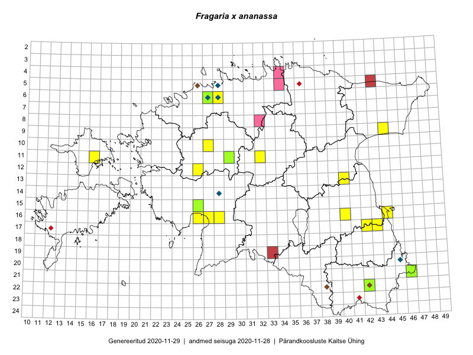

Fragaria x ananassa
Uuendatud: 2016-12-08
Kaardile koondatud taksonid: Fragaria ananassa Duchesne; Fragaria x ananassa Duchesne

Kaart põhineb 20 vaatlusel. Taime on leitud 12 ruudust.
| Ruut | Vaatleja(d) | Vaatlusaeg | Kirje tüüp | Viide andmebaasikirjele |
|---|---|---|---|---|
| 11-29 | Toomas Kukk, Tiit Hallikma | 2015-06-11 | ruut/ala | vaata PlutoFis |
| 09-44 | Ott Luuk, Hannes Pehlak | 2015-07-24 | ruut/ala | vaata PlutoFis |
| 09-44 | Toomas Kukk | 2014-07-12 | ruut/ala | vaata PlutoFis |
| 13-40 | Eeva-Maria Jeletsky, Tarmo Niitla | 2015-04-26 | ruut/ala | vaata PlutoFis |
| 13-40 | Eeva-Maria Jeletsky, Tarmo Niitla | 2015-04-26 | punkt | vaata PlutoFis |
| 11-16 | Eeva-Maria Jeletsky, Tarmo Niitla | 2015-06-22 | punkt | vaata PlutoFis |
| 11-16 | Eeva-Maria Jeletsky, Tarmo Niitla | 2015-06-22 | ruut/ala | vaata PlutoFis |
| 16-26 | Meeli Mesipuu | 2015-06-27 | punkt | vaata PlutoFis |
| 06-27 | Tõnu Ploompuu | 2015-08-11 | ruut/ala | vaata PlutoFis |
| 12-26 | Andrus Jair, Tõnu Ploompuu | 2015-05-17 | ruut/ala | vaata PlutoFis |
| 17-43 | Rein Kalamees, Eerik Leibak | 2016-06-13 | ruut/ala | vaata PlutoFis |
| 17-43 | Rein Kalamees, Eerik Leibak | 2016-06-13 | punkt | vaata PlutoFis |
| 21-46 | Meeli Mesipuu, Timo Luhamäe | 2016-06-14 | punkt | vaata PlutoFis |
| 16-44 | Maret Gerz, Liina Oja | 2016-06-13 | ruut/ala | vaata PlutoFis |
| 16-44 | Liina Oja, Maret Gerz | 2016-06-13 | punkt | vaata PlutoFis |
| 06-28 | Toomas Kukk | 2016-07-04 | ruut/ala | vaata PlutoFis |
| 06-28 | Toomas Kukk | 2016-07-04 | punkt | vaata PlutoFis |
| 21-46 | Timo Luhamäe, Meeli Mesipuu | 2016-06-14 | ruut/ala | vaata PlutoFis |
| 17-42 | Jaak-Albert Metsoja, Mari Metsoja | 2016-06-13 | punkt | vaata PlutoFis |
| 17-42 | Jaak-Albert Metsoja, Mari Metsoja | 2016-06-13 | ruut/ala | vaata PlutoFis |